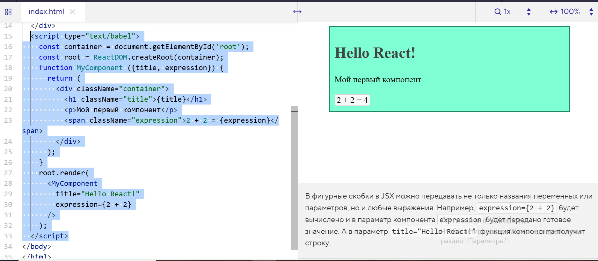

В фигурные скобки в JSX можно передавать не только названия переменных или параметров, но и любые выражения. Например,expression={2 + 2} будет вычислено и в параметр компонента expression будет передано готовое значение. А в параметр title="Hello React!" функция компонента получит строку.
